정책활용 시범 가이드라인
— 해양 아열대화와 외래생물종 —
제1절 기후위기와 해양
기후변화는 육상, 해양, 극지 등 전지구 모든 공간에 영향을 미치고 있으며, 변화 속도는 매년 빨라지고 있다. 세계경제포럼(WEF, World Economic Forum)이 2023년 발표한 『전지구 리스크 보고서(Global Risks Report)』에서 향후 10년 인류가 마주할 핵심 리스크 3개는 기후변화 대응 실패, 극한기상, 생물다양성 손실이었다(WEF, 2023).
과학적 조사연구 자료는 더 풍부해지고, 방법론은 예전보다 정교해지고 있지만, 기후과학의 발전 속도보다 기후변화의 속도가 빠르다는 것을 의미한다. 인류의 예측보다 더 빠르게 진행되고 있어서 제7차 기후변화평가보고서에서 우리가 예상하지 못한 시나리오를 마주할 가능성도 있다. 지구온난화가 아니라 지구열대화(global boiling) 단계에 접어들어, 기후위기 시대에 살고 있다고 평가하기도 한다.
기후위기에서 해양과 관련하여 국제사회에서 주목하는 중요 이슈로 해수면 상승, 해양산성화(pH), 해수온도 상승이 있다. 해수면 상승은 예측이 어느 정도 가능하고 적응대책을 적극적으로 시행하면 상승에 따른 영향을 줄이고, 피해를 최소화할 수 있다. 해양산성화는 전지구생태계 중 산호생태계에 가장 큰 영향을 미치는 것 외에도 해양생물종의 생리와 성장에도 영향을 준다. 해수온도 상승은 대부분 해양공간에서, 모든 해양생태계의 변화와 가장 직접 관련이 있고, 생태계뿐만 아니라 연안지역 사회, 경제활동에 영향을 끼칠 수 있다.
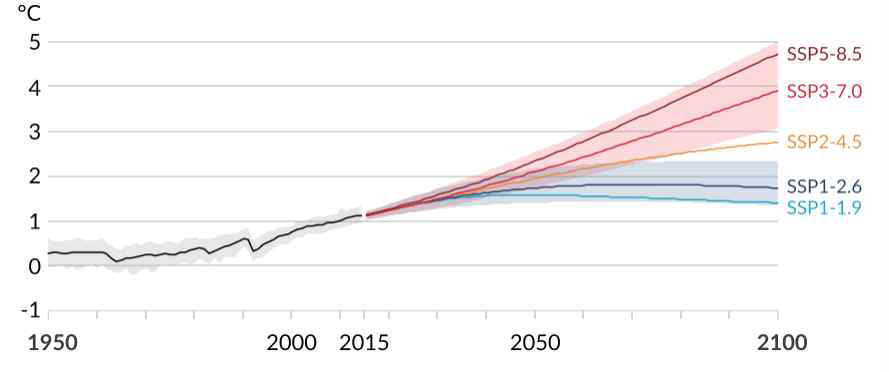
해수면 온도는 지속적으로 상승하여 2023년 5월 온도는 2022년보다 0.2℃ 높았고, 6월 해수면 온도는 예전과 비교할 때 예외적으로 높은 수치를 보였다고 한다(세계기상기구 홈페이지). 이는 해양이 대기 중 열에너지를 이전보다 더 많이 흡수하고 있다는 것을 의미하여, 기상패턴의 변화, 태풍강도 증가, 생물다양성 손실, 산호초 백화 등을 일으킬 수 있다고 한다(세계기상기구 홈페이지).
코페르니쿠스 기후변화서비스(Copernicus Climate Change Service, C3S)가 2023년 9월 발표한 전세계 평균해수면 온도 변화 자료는 올 여름이 가장 더웠다는 것을 말하고 있다. 다른 기관도 올해 여름이 가장 뜨거운 여름이었다는 연구결과를 발표하였고, 이런 온도 상승 경향은 앞으로도 강화될 것이라고 전망하였다.
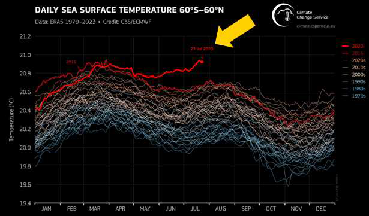
해양생물의 산란, 서식, 생장에 가장 큰 영향을 미치는 환경변수가 해수온도라는 것은 잘 알려진 사실이다. 따라서 해수 온도가 상승하면 해양경제 활동 중 잡는 어업과 양식업이 가장 큰 영향을 받는다. 경제적 영향 외에도 주목할 사실은 온대지방은 우리나라가 아열대화 과정을 겪게 될 것이고, 아열대성 생물의 서식공간이 현재보다 넓게 분포할뿐만 아니라, 새로운 생물종이 유입하여 서식할 것이다. 생물종의 변화는 수산업뿐만 아니라 관광, 연안지역 정주여건, 생활환경에도 영향을 줄 가능성이 크다.
제2절 아열대화와 외래생물종
1. 해수온도 변화와 해양생물
해수온도는 해양생물의 서식환경에 가장 큰 영향을 주고, 생태계를 변화시키는 핵심 환경변수다. 환경변화에 민감한 생물종 중 이동성 생물은 생존을 위해 이동을 하지만, 이동이 어려운 생물종은 변화를 견디거나, 견디지 못할 경우 생존할 수 없다. 최근 온도상승이 예상치를 뛰어 넘어 나타나고 있는 상황에서 인간활동에서 발생한 에너지의 90% 이상을 흡수하는 해양에서 온도변화는 더 커질 것으로 전망된다.
IPCC가 발간한 제6차 기후변화평가보고서에 따르면, 그간의 관측결과를 토대로 기후변화, 온도상승에 따라 생태계는 구조, 생물종, 계절변동에서 큰 변화가 나타났다고 한다. 지역별 변화에 대한 신뢰도는 차이가 있지만 전지구적 관점에서 보면 기후변화의 생태계 영향 관측결과는 높은 신뢰도를 보이고 있다.
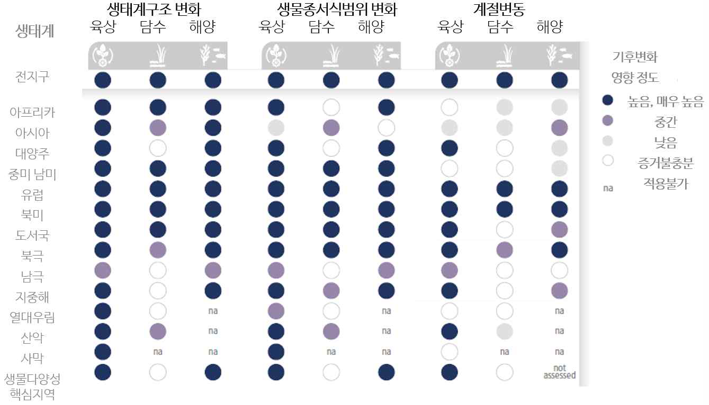
기후변화에 따른 해양생물종 변화에 대한 연구와 정책개발은 육상 생물종에 대한 연구, 정책과 비교할 때 많지 않은 편이다. 기후변화로 생물종 분포 변화를 연구한 논문에 따르면 해양생물종의 이동속도(72㎞/10년)가 육상생물(17㎞/10년)보다 4배 이상 빠르다고 한다(Pecl et al., 2017). 전지구적 관점에서 육상, 해양을 아우르는 연구였지만, 해양기후연구의 중요성을 확인할 수 있는 연구라고 할 수 있다.
2. 한반도 아열대화
기후변화 속도가 빨라지고 있다는 것은 이미 여러 연구에서 확인하였다. 온대 몬순 기후대에 위치한 한반도 주변해역의 수온이 상승하면 아열대화가 진행될 것임은 분명하다. IPCC는 제6차 기후변화평가보고서에서 기후변화에 가장 민감하게 영향을 받는 해양생태계를 산호초로 꼽았다(IPCC, 2022). 해초대, 암반 서식생물, 염습지, 갯벌생태계도 피해위험과 영향이 크다고 한다.
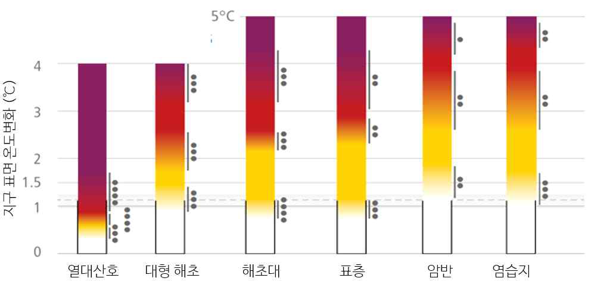
한반도 주변해역은 기후변화의 영향을 가장 크게 받을 것으로 예상된다. 즉, 온대지방의 다른 국가 해역보다 아열대화가 더 빠르게 진행될 전망이다. 미국 해양대기청(NOAA)이 산호초 모니터링을 위해 개발한 수온 관측결과에 따르면, 전세계 해역 중 한반도 동해 해수온도 이상(anomaly) 값이 가장 높게 나타났다. 그간 기후변화에 따른 해수온도 상승이 가장 높을 것으로 알려진 지중해보다 더 변동성이 크다. 엘니뇨 영향을 처음으로 관측한 남아메리카 서부해역과 비슷한 수준이지만 해수온도 이상이 높은 면적은 넓게 나타났다. 온대해역 중 우리나라 동해에서 아열대화 현상이 가장 먼저 나타날 수 있다.
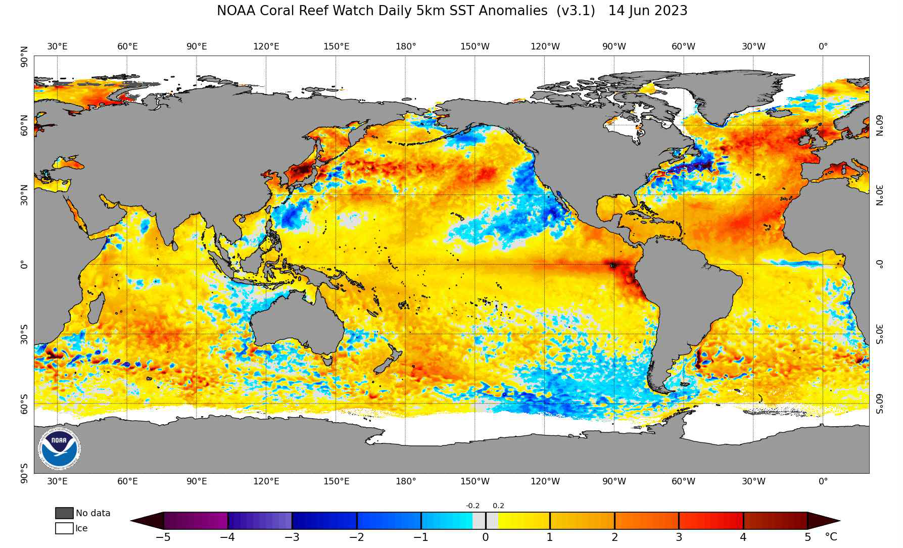
3. 한반도 아열대화와 해양생물 유입
1) 기후변화와 생태계 영향 구조
기후변화는 온도뿐만 아니라 생물 서식환경의 화학적 특성을 변화시켜, 생태계 기능을 약화시키거나 붕괴시킬 수 있다(Harris and Tyrrel, 2001). 기후변화에 따라 환경조건이 변하면 생태계는 1차적으로 생리적, 형태학적, 행동학적 반응을 보이고, 결과적으로 개체군의 규모와 군집구조를 변화시킨다. 변화는 결국 생물종 분포, 생산력, 생물다양성뿐만 아니라 미시적으로 진화양상도 변화시킬 수 있다고 한다(Harley et al., 2006; Occhipinti-Ambrogi, 2007; EC, 2008).
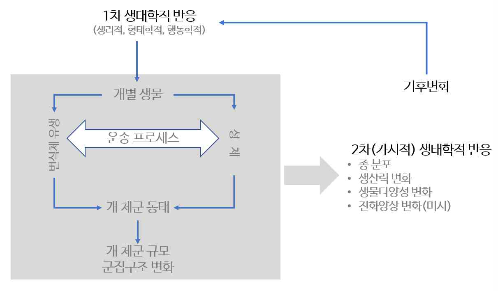
생태계의 붕괴나 약화가 생물체의 멸종이 아니라 새로운 종이 유입하여 서식하는 종 구성이 변화하는 천이과정을 거칠 가능성이 크다. 토착종과 유입종 간 경쟁을 거치면서 새로운 서식환경에 가장 잘 적응하는 생물종이 우점한다. 유럽연합은 인위적으로 유입한 외래종뿐만 아니라 기후변화에 따른 외래종 유입에 정책적 관심이 높다. 선박을 통해 유입한 생물이 기후변화에 따라 바뀌는 환경이 정착과 성장에 적합할 때 정착, 확산이 빠르게 진행될 수 있기 때문이다(EC, 2008).
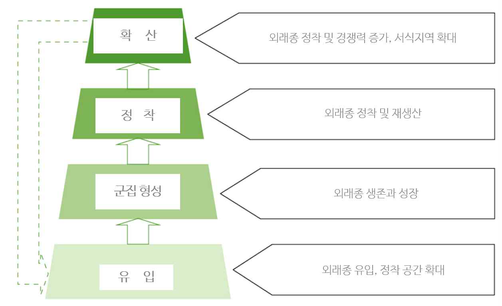
한편, 외래종 유입이 유입생태계나 그 생태계를 이용하는 지역민에게 피해만 주는 것은 아니다. 새로운 종이 상업적으로 이익을 줄 수 있고, 자연이 제공하는 혜택인 생태계서비스를 높일 수 있기도 하기 때문이다. 수에즈 운하를 거쳐 지중해로 유입한 에리트리아는 관상어로서 인기가 높아, 외래생물 유입이 경제적 이익을 안겨준 대표적인 사례다(Golani and Ven Tuvia, 1995; Halim and Rizkalla, 2011).
2) 한반도 아열대화와 외래해양생물 유입
전지구적 기후변화에 따른 해수온도 상승은, 장기적으로 온대지역 해양환경을 아열대성 환경으로 변화시킬 수 있다. 한반도 주변 해역의 온도상승률은 전지구 해수온도 상승률보다 약 3배 이상 높다(국립수산과학원, 2022). 가장 안 좋은 상황을 가정한 시나리오(RCP 8.5)를 기준으로 한반도 해역 해수온도는 2081~2100년에 4℃ 이상 상승할 것으로 알려져 있다(국립수산과학원, 2022). 이 예측 전망은 제5차 기후변화평가보고서를 토대로 만들어졌다. 1.5℃ 도달 시점이 특별보고서보다 10년 이상 당겨졌다고 발표한 제6차 기후변화평가보고서를 보면 온난화 속도는 더 빨라질 것이다.
이미 일부 해역은 아열대 해역으로 바뀌고 있다. 일반적으로 아열대 해역의 연평균 수온은 18~20℃라고 알려졌는데, 이미 2000년에 남해의 연평균 수온은 19.0℃가 되었다. 한반도 아열대화가 지금의 과학으로 예측한 것보다 일찍 나타날 가능성이 커지고 있다.
Pecl과 동료들이 발표한 논문(2017)은, 동북아시아 해역은 산호초, 대형 해조류, 전복 등이 생물종, 생태계 구조 변화에서 가장 주목해야 할 생물로 봤다. 외래생물종 유입에 대한 국내 연구와 조사 사례를 보면, 거품돌산호, 큰갈파래, 해호말, 넓은띠큰바다뱀, 밤수지맨드라미, 파란문어, 유령멍게 등은 이미 제주해역을 포함하여 남해에 서식하고 있는 것이 확인되었다. 대형해조류에 부착하여 서식하는 부착성 미생물인 오스트레오프시스(Ostreopsis)는 2011년 제주해역에서 출현이 보고된 후 지금은 울릉도 해역에 서식하는 것으로 확인되었다.
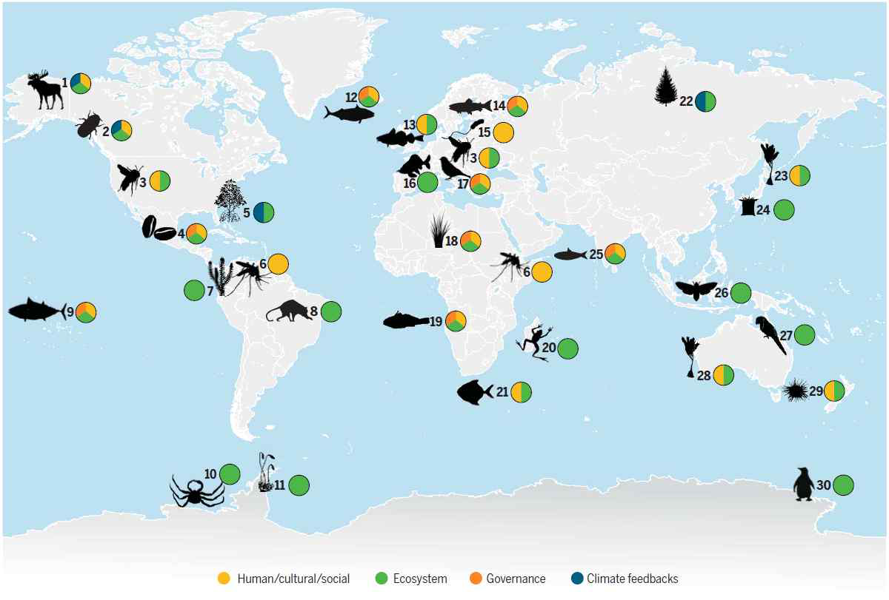
3) 해양기후변화 적응 가이드라인 필요성
기후변화로 바뀐 해양 환경과 생태계를 인간의 노력으로 변화 이전으로 되돌리는 것은 불가능하다. 온실가스 배출 감축과 흡수원을 발굴하여 속도는 낮출 수 있지만, 방향을 바꾸는 것은 어렵다는 것이다. 해양영역 자체의 노력이나 행동으로 문제를 해결하는 것은 더욱 어려운 일이다. 피해를 최소화하고 이익을 유지하려면, 해양기후변화 적응의 관점에서 해역별 맞춤형 적응 방향을 마련하는 것이 필요하다.
국내외 기후변화, 외래생물종에 관한 연구와 정책 동향을 살펴보는 것이 적응대책을 마련하는 첫걸음이다. 주변 해역 상세모델의 예측결과를 활용하여 주요 아열대생물종의 장래 서식 분포를 전망할 수 있다면, 해양기후변화에 현명하게 적응할 수 있을 것이다.
제1절 외래종 유입 관련 연구 동향
전세계적으로 기후변화에 따른 외래종 유입에 관한 연구는 2000년대 이후 꾸준이 증가하고 있다. 외래종과 기후변화에 관한 초기 연구에서는 해수온도 상승은 특정 생물종의 분포 범위를 확장하고, 토착종의 멸종 뿐 아니라 영양 물질의 흐름 및 일차 생산자 등 전체 생태계의 기능의 변화를 초래할 수 있음을 지적하였다(Occhipinti-Ambrogi A., 2007).
1. 연안 서식 생물종 구성에 영향을 미치는 환경 요인
기후변화와 외래종의 유입 및 성장 사이에 상호작용이 존재한다는 것은 분명하지만, 기후변화가 종 구성의 장기적인 변화에 어떻게 영향을 미치는지는 상대적으로 거의 알려지지 않은 상태이다. Dijkstra 외 연구진은 영국 포츠머스 항 인근 연안에서 외래종의 유입 전·후를 포괄하는 23년(1979~1981년과 2003~2005)의 데이터를 비교하여 기후변화에 따른 종 구성 및 군집 기능의 장기적인 변화를 분석하였다.
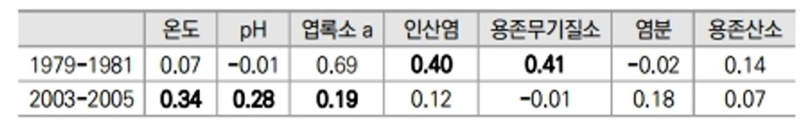
1979~1981년에는 다년생 종인 홍홥과 따개비가 주로 서식하였으나, 2003~2005년에는 일년생 외래종인 멍게가 우점하였다. 또한 1980년대는 용존 무기질소와 인산염이 종의 군집에 영향을 끼치는 주요 환경변수인 반면, 2000년대는 온도와 pH가 주요 영향 변수인 것으로 나타났다. 2000년대 가을과 초겨울에 해수온도가 상승하여 토착종의 성장 기간을 연장하기도 했지만 외래종의 확산에도 기여한 것으로 드러났다. 마지막으로 해안 생물의 생활사, 즉 성장, 집단 가입 시기, 사망률 등은 환경 요인 중에서 특히 수온의 영향을 크게 받는 것으로 밝혀졌다.
2. 수온 상승과 외래 유입 게 확산 범위와의 관계
연안 생태계 먹이사슬의 상위 포식자인 갑각류는 생태계 종 구성에 큰 영향을 미친다. 태평양이 원산지인 물맞이게(Hemigrapsus sanguineus)는 수십 년 만에 전 세계로 확산되어, 1980년대에 북미 대서양 연안에서, 1990년대 이후에는 유럽 연안 해역에서 관찰되고 있다. 기후 변화에 따른 해수온도 상승으로 물맞이게의 분포 지역이 북쪽으로 이동하면서 유럽의 토종 게인 녹색게(Carcinus maenus)의 개체수가 감소하고, 물맞이게의 왕성한 포식 행위로 홍합 등 토종 무척추 동물의 멸종 지역이 증가하고 있다.
영국 알프러드 베게너 연구소와 그라이프스발트 대학의 과학자들은 기후변화에 따른 수온 변화가 물맞이게의 유충 및 성체 분포에 어떠한 영향을 미치는지에 대해 연구하였다(Giménez et al., 2020). 연구 결과, 수온이 상승함에 따라 유충에서 어린 게로 성장하는 가입률이 증가하며, 현재 기후변화 추이가 계속된다면 영국 북부와 노르웨이 해안을 따라 서식면적이 북쪽으로 확산될 것으로 예측되었다.
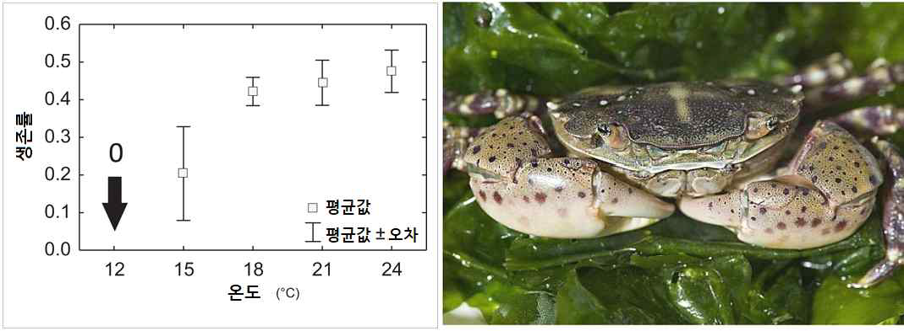
3. 기후변화로 인한 외래종 유입 관리방안
해양보호구역은 기후변화로 인한 생물다양성 손실과 서식지 변화에 대응하는 피난처를 제공하고, 선박 통행 제한과 해양 활동 감시를 통해 외래종의 유입을 방지하는 중요한 역할을 한다. Gallardo 외 연구진에 따르면, 유럽 해역에서 해양보호구역이 외래종으로부터 토착종을 보호하는 효과는 상당하며, 보호구역 외부에 비해 내부에서 외래종 유입이 11~18% 정도 낮은 것으로 밝혀졌다(Gallardo et al., 2017). UKMO-HadCM3 모델로 기후변화 시나리오를 분석한 결과, 해양 외래종은 10년에 북쪽으로 14~22km, 서쪽으로 8~16km의 속도로 확산될 것으로 예상된다. 또한 외래종 유입에 취약한 종은 유럽 해역 전반에 고르게 흩어져 있는 반면, 외래 종 유입은 해양보호구역의 4분의 1지역에서만 나타났다. 해양보호구역이 기후변화로 인한 외래종의 유입을 억제하는 효과적인 조치임을 뒷받침해 주는 연구결과라고 할 수 있다.
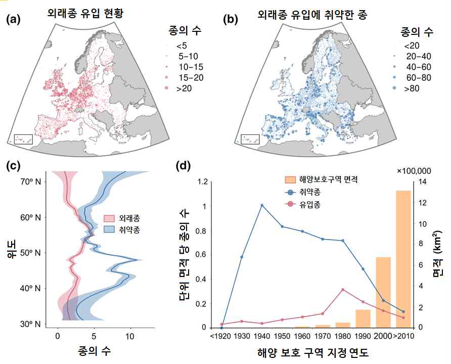
제2절 해양 외래종 유입 관련 정책 동향
1. 미국
미국은 1996년 제정한 국가 침입종 법(National Invasive Species Act, NISA)으로 해양 외래종을 관리하고 있으며 기후변화와 관련하여 연방 및 주 계획을 결합하여 관리 정책을 시행하고 있다. 미국 환경보호국(EPA)은 국가오염방지배출시스템(NPEDES)에 따라 선박의 유역수 배출을 규제하여 해양 외래종의 유입 및 확산을 통제하고 있다. 개별 주는 외래종을 다루기 위한 자체 정책 및 관리 계획을 수립하고 있다. 캘리포니아 주는 '연방 선박평형수 배출 표준(California's Ballast Water Discharge Performance Standards)'을 적용하여 선박평형수 처리 시스템을 사용하는 선박에 대한 운영 모니터링과 관련 기록 유지를 의무화하고 있다. 미국은 기후변화에 따른 해양외래종 유입을 예방하기 위한 연구와 모니터링도 적극적으로 시행하고 있다. 미국해양대기청(NOAA) 수산국은 해양 64종의 기후변화 민감도를 3단계로 평가한다. 2016년부터 북동부 어패류 기후 취약성 평가를 시작으로 어업관련 종 및 해양 포유류에 대한 평가를 시행하고 있다.
미국은 해양외래종 확산 방지를 위해 대중의 역할을 강조하고 교육을 적극적으로 시행하고 있다. 1999년에 대통령 행정명령 13112호 및 13751호에 따라 설립한 국가침입외래종위원회(NISC)는 외래종의 영향을 받는 생태계를 복원하기 위해 방제, 박멸, 조절 원칙을 적용하고 있다. 이 위원회는 여러 부처의 장관과 관리자들로 구성되어 있으며, 침입종자문위원회(ISAC)에서 논의한 사항을 내무부 홈페이지를 통해 공개하고 있다. 미국농무부(USDA)는 '국가 외래종 정보센터'를 개설하여 해양 및 육상 외래종 정보를 동물, 척추, 무척추, 외래종 기인 병원체 및 질병으로 분류하여 상세히 제공하고 있다. 이와 함께, 국민들이 외래종 제거 작업에 참여할 수 있도록 프로그램 가입 링크와 외래종 신고 웹사이트(HungryPests.com)를 운영하여 시민 참여와 인식 증진에 힘쓰고 있다.
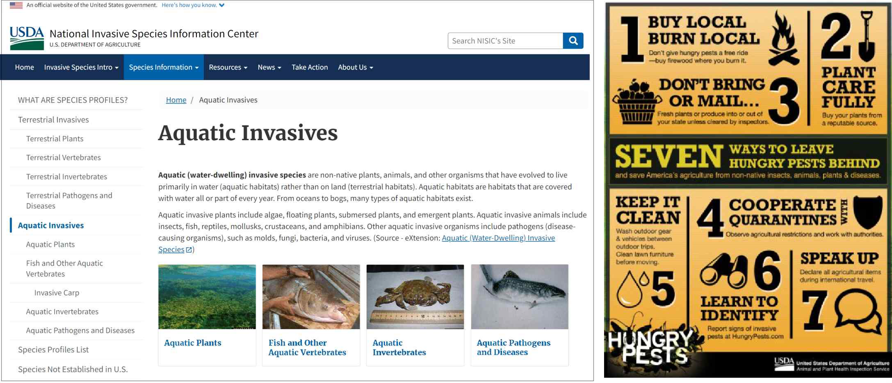
2. 영국
영국은 2019년 외래종 동물 법규(Invasive Non-Native Species Regulation)를 제정하여 위험평가, 종 관리 계획 및 특정 외래종의 유입에 대한 제한 사항을 규정하고 있다. 이와 함께 비토착종사무국(GBNNSS)을 설립하여 외래종에 대한 관리 체계를 마련했다. 2015년에 육지, 담수 및 해양 환경에 유입되는 외래종 문제를 해결하기 위한 '영국침입성 비토착종 전략(The Great Britain Invasive Non-native Species Strategy)'을 수립했으며, 최근에는 2023년부터 2030년까지의 전략을 추가한 개정안을 발표하였다.
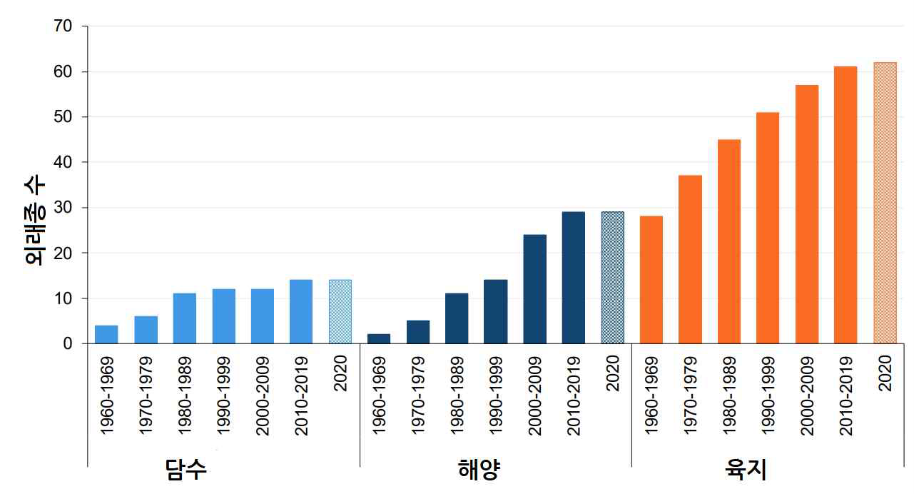
영국은 외래종의 유입을 방지하기 위해 예방, 조기 감지 및 신속한 대응의 중요성을 강조하고 있다. 이를 위해 우선적으로 관리해야 할 외래종의 순위를 설정하도록 비용·편익 분석을 통해 위험 관리·평가 기반을 마련하고 있다. 또한 기존 시스템과 통합 및 협력 방안을 고려하여 관리 전략을 수립하는 등 해양외래종 대응력을 강화하고 있다. 특히 GBNNSS는 매년 '외래종 주간(Invasive Species Week)'을 운영하여 국민과 정부 부처가 외래종 문제에 대한 인식을 제고하고 협력할 수 있는 방안을 모색하고 있다. 해양 외래종의 식별, 모니터링 및 사회경제적 분석은 농림부(Defra)의 자금을 받아 환경수산양식과학센터(Cefas)가 수행한다. 모니터링과 분석뿐만 아니라 해양 외래종 식별 키트 프로그램을 개발하여 32개의 언어로 무료로 제공하고 있다.
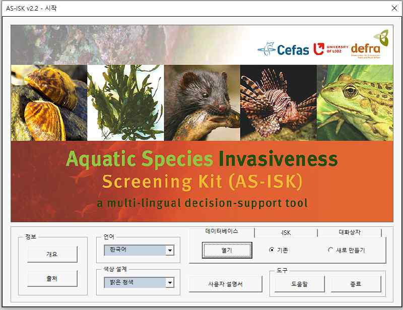
3. 호주
호주는 생물보안법(Biosecurity Act 2015)을 제정하여 해양 및 육지 환경에서의 외래종 유입을 관리하고 있다. 또한 다양한 정부 부처 및 기관들이 공동으로 침입외래생물솔루션 센터(CISS, Centre for Invasive Species Solutions)를 운영하며 외래 종 관리 전략을 개발하고 있다. 연방과학산업연구기구(CSIRO)는 기후변화에 따른 외래 종 방제 방법 개발에 관한 연구를 진행하고 있다.
육상 및 해양으로 유입하는 외래 식물종은 'Weed of National Significance(WoNS)' 프로그램으로 관리하고 있으며 지역 사회 및 자원봉사자들과 협력하여 외래 식물종의 확산을 방지하고 있다. 또한 연안 및 섬 지역과 파트너쉽을 통해 침입 외래 종 박멸 활동 및 외래종 격리 조치를 시행하고 있다. 호주는 생물안보의 관점에서 외래 종을 관리하고 대중의 인식을 높이기 위한 정책도 진행하고 있다. 국가 해양 외래 종 정보 시스템을 운영하여 국민들이 외래종을 신고하거나 분포 지역을 확인할 수 있는 웹사이트를 제공하고 있다. 이와 더불어 'Invasive Species Council'의 운영을 지원하여 기후변화에 따른 외래 종 유입에 대한 홍보 활동 및 교육을 통해 대중의 인식을 높이는 데 노력하고 있다.
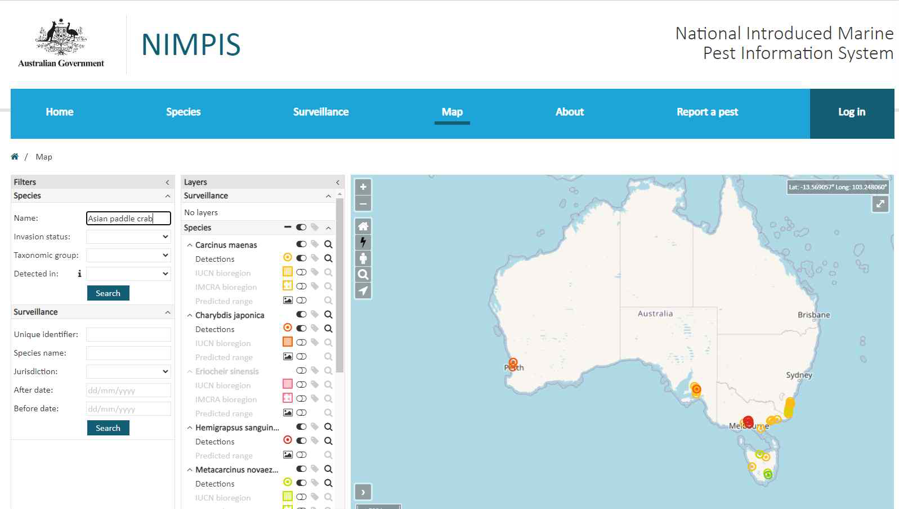
제3절 전지구 수온 변화 추이
해수면 온도는 지구의 기후 변화를 나타내는 필수 지표이며 기상 패턴, 해류 및 전 세계 물 순환을 형성하는 데 중요한 역할을 하고 있다. EU 코페르니쿠스 기후 변화 서비스가 생산한 1993년부터 2021년 표층 해수온도 추이를 분석한 결과, 해수온도는 연간 약 0.015℃ 상승하는 것으로 나타났다.
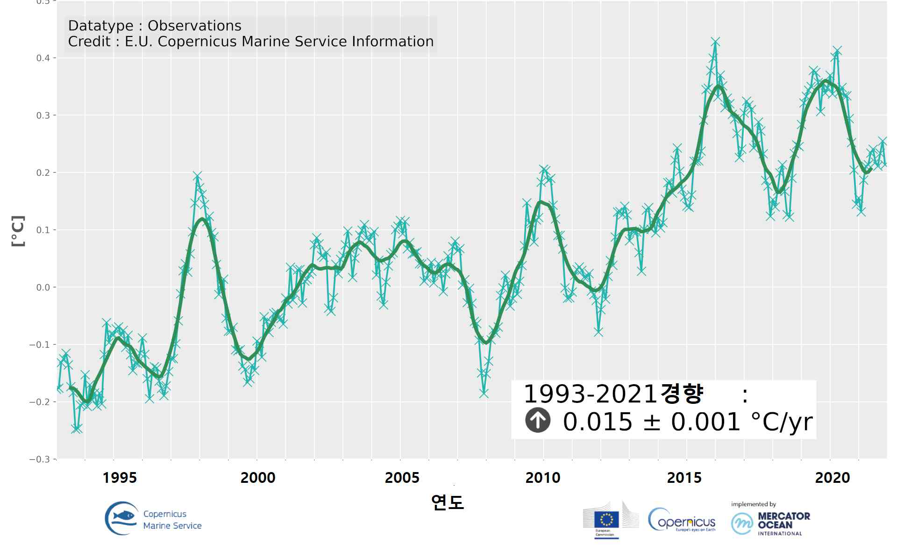
IPCC는 제6차 기후변화보고서에서 20세기 초부터 전 세계 해양의 온난화가 급격히 증가하고 있으며 기후변화에 따라 등온선이 이동하는 속도와 방향을 나타내는 '기후속도'는 해양 생물이 서식 가능한 환경으로 이동하는 경로를 이해하는 데 중요한 척도가 될 수 있다고 언급하였다. 또한 1971년 이후로 해양이 따뜻해진 것은 사실이며, 세계 평균 해수면 온도(SST)는 20세기 초에 비해 약 0.88℃ 상승하였다고 보고하였다. 해양온난화 속도는 모든 해양 층에서 균일하지는 않으며 1960년 이후 해양 표층의 평균 기후 속도는 21.7km/10년로 적도로부터 위도 15도 이내 지역과 극지방의 기후속도가 더 높은 것으로 드러났다.
2021년 IPCC는 SSP5-8.5 시나리오에 따라 '6차 접합대순환모델 비교 프로젝트(CMIP6)'의 최신 예측을 활용해 미래 평균 수온을 발표하였다. 연구 결과에 따르면 대기온도가 2℃ 상승할 경우 표층수온은 1850-1900년의 평균 값보다 약 1.3℃ 상승하고, 4℃가 상승할 경우 전지구적으로 표층수온이 2.7℃ 상승하는 것으로 나타났다. 특히, 대기온도가 4℃ 상승한 지구 온난화의 시나리오에서 극지방의 온도 상승률이 매우 높으며 여름철에서 초가을 상승 폭은 2100년도로 갈수록 평균 3℃ 이상으로 급격히 증가하는 것으로 나타났다.
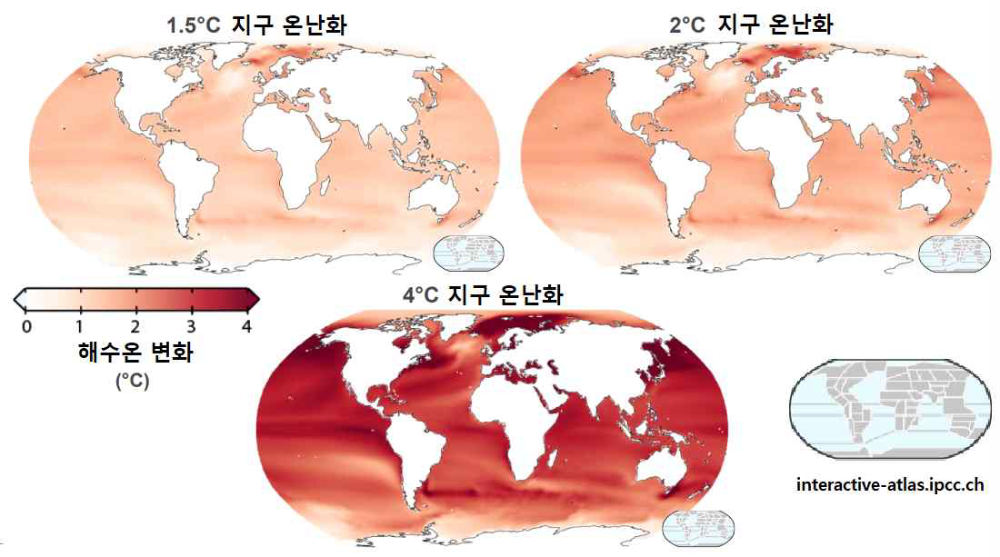
제1절 연구 현황
국내에서는 기후변화에 따른 해양생태계 영향에 대해 해양수산분야 연구를 수행하는 여러 국가 기관에서 조사연구를 하고 있다. 장기적으로 기후변화에 따른 해양생태계 변화를 조사한 자료는 「국가해양생태계 종합조사(해양환경공단)」와 「장기해양생태계 연구: 환경변화와 생태계 반응(해양수산부)」이 있다. 자료분석과 예측모델을 이용하여 미래 변화에 대한 보고서는 「수산분야 기후변화 백서(국립수산과학원)」, 「2023 수산부문 기후변화 영향 및 연구보고서(국립수산과학원)」이 있다. 해양수산부, 국립생물자원관, 국립공원연구원은 해양생태계 기후변화 지표종 관련 보고서, 국립생태원에서는 기후변화에 의한 생태계 피해를 예측하는 보고서를 발간하였다.
1. 국가 해양생태계 종합조사
국가 해양생태계 종합조사는 우리나라 해양생태계의 현황과 변화를 신속하게 진단하고 평가하기 위해 전국 연안과 갯벌생태계 현황을 조사하는 사업이다. 2015년부터 매년 조사를 수행하고 있으며, 우리나라 해양생태계의 장·단기 변동 특성을 체계적으로 종합적으로 파악하여 위협요소·기후변화 대응 등 종합적인 해양생태계 보전·관리정책 수립의 기초자료를 확보하고 있다.
최근 2015년부터 2020년까지 조사한 자료를 바탕으로 기후변화에 따른 해양생태계 및 생물의 변동과 우리나라 해양생태계의 다양성·건강성을 진단할 수 있는 지표를 발굴하였다. 그 결과, 온대성 해조류(갈조류)에 비해 상대적으로 따뜻한 바다에 서식하는 열대·온대 혼합성 해조류(홍조류)는 남해 서부를 제외한 우리나라 전 해역에서 출현 종수와 분포가 확대되고 있다. 또한 대마난류에 직접적인 영향을 받는 해역에 출현하는 어류(총 112종) 중 난류종 어종 수가 최근 6년간 약 18%('15년 52%→'20년 70%) 증가하였다(해양수산부 보도자료, 2021.3.26.).
기후변화는 해저에 서식하는 해양생물인 소라, 달랑게, 기수갈고등 등에도 영향을 준다. 소라는 과거('09~'11년) 남해안 지역인 북위 35°까지 서식하는 것으로 관찰되었으나, 최근 북위 37°(울진 부근)까지 서식처를 확대했다. 또한 동해안에 서식하는 달랑게는 북쪽으로 약 80km(포항 북구→경북 울진), 기수갈고둥은 약 20km(경북 울진→강원 삼척)까지 서식처를 확대했다. 기후변화로 해수 온도가 높아지면서 해양생물들이 생존할 수 있는 한계선이 북쪽으로 이동했다는 것을 의미한다.
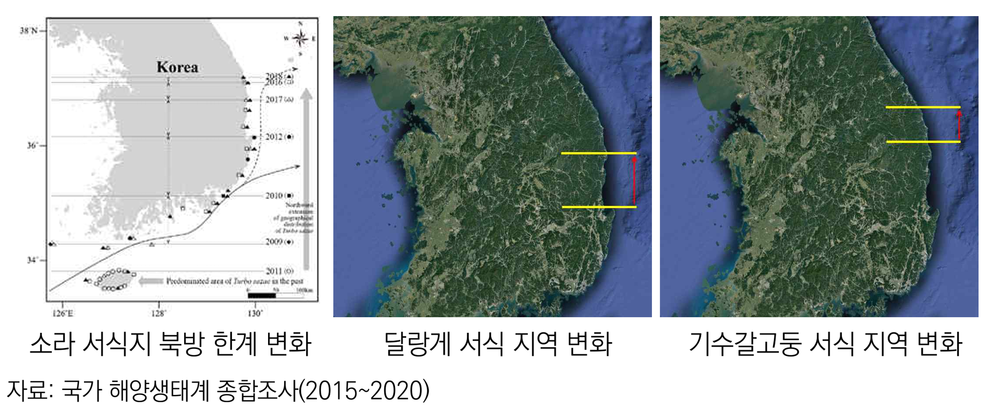
2. 장기해양생태계 연구
장기해양생태계 연구사업은 2011년부터 2021년까지 해양수산부가 지원한 국가연구개발사업으로 우리나라 주요 해양생태계에 대한 기후변화 영향을 진단·평가하고 미래변화 양상을 예측하는 연구를 수행하였다. 이 연구사업은 과거 단기 연구와 달리 국가 차원의 종합적 해양기후변화대응연구 체계를 구축하기 위해 추진됐다.
주요 연구 성과로는 동해의 해수 수온 상승으로 작은 식물플랑크톤이 얻는 환경상 이점과 식물플랑크톤을 먹이로 하는 동물플랑크톤 등 상위 먹이망에 미치는 영향, 남해 광양만에서 강수량 감소와 수온 상승 영향으로 기초대사를 위한 영양물질이 감소하면서 생태계 구조가 시·공간적으로 뚜렷한 차이를 보이는 점, 제주 해역에서 거품돌산호가 대량으로 출현해 우리나라 고유 해조류인 감태 서식처가 감소하는 등 생태계 구조의 변화를 확인하였다. 제주 동부와 서부 해역에서 해조 군집의 소형화와 단순화가 뚜렷하게 나타났고, 감태와 같은 대형 갈조류 중심의 해조 기반 생태계를 이루었던 제주 연안 생태계는 아열대성 산호류가 중심이 되는 산호 기반 생태계로 변동하고 있는 양상이 관찰되었다.
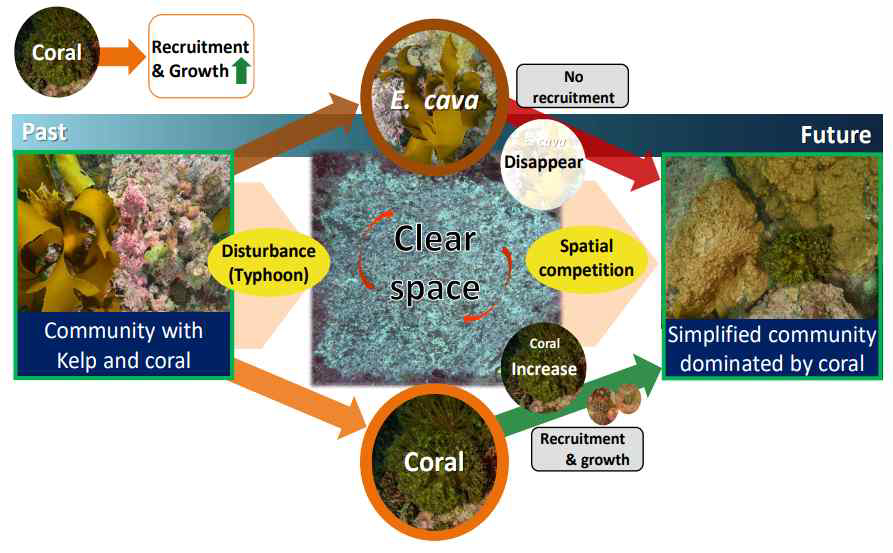
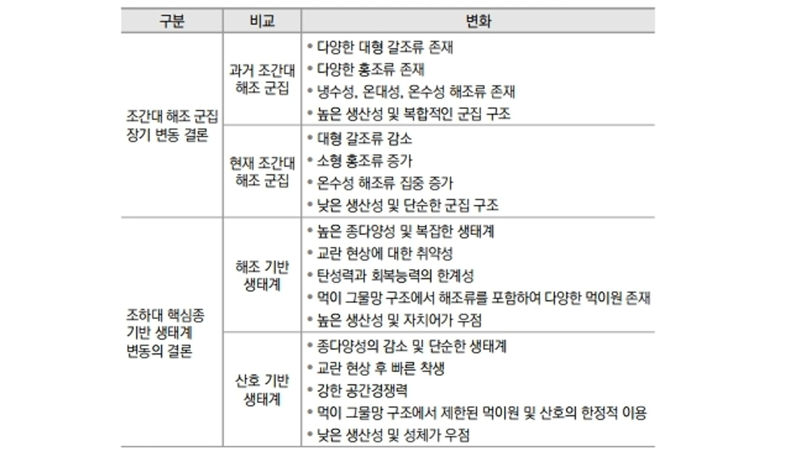
3. 수산분야 기후변화 평가 백서
『수산분야 기후변화 평가 백서』는 우리나라 수산업의 취약성 평가 분석 및 미래 우리 바다의 변화를 예측하였으며, 어업생산량과 양식생물의 생리생태 변화, 이상 고수온 발생 경향과 대응 방안, 기후변화 시나리오에 따른 수산업 취약성 평가 등을 자세하게 설명하였다.
백서에 따르면 1980년 이후 어획 어종의 비율이 단순화되고 있으며, 한류성 어종 어획량은 감소하고, 난류성 어종 어획량은 증가하는 특징을 보인다. 또한 표층성 부어류는 증가하는 반면, 저어류는 감소하는 경향을 보였다. 기후변화 모니터링 대상 어종(방어, 대구, 삼치)의 어획 현황을 살펴본 결과, 방어류는 연간 변동성이 크게 나타나고 있고, 대구는 기후변화 영향에 의한 어장 이동 가능성은 낮게 나타났다. 분명한 것은 제주도를 중심으로 아열대성 어종이 출현하는 양상이 두드러지고 있다는 것이다.
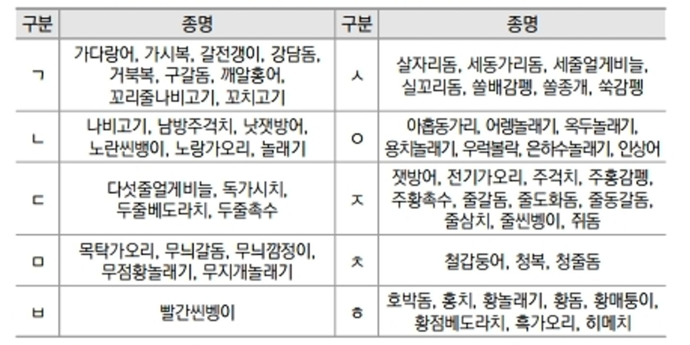
4. 2023 수산부문 기후변화 영향 및 연구보고서
국립수산과학원은 해양·수산 분야의 기후변화 영향·전망 및 대응 연구결과를 종합한 『2023 수산부문 기후변화 영향 및 연구보고서』를 발간하였다. 보고서에 따르면 해수 수온 상승으로 인해 식중독을 유발하는 플랑크톤은 2100년에 현재보다 100일 이상 출현할 가능성이 높은 것으로 전망하였다. 또 태평양의 다랑어 어장은 엘니뇨 시기에 어장 확대와 조업 효율 상승 등으로 어획량이 증가하고, 라니냐 시기에는 어획량이 감소하는 범지구적 기후요인의 영향을 받을 것이라고 확인하였다.
아열대 어종 출현 상황을 파악하기 위해 10년간(2013~2022) 잠수조사 결과, 주요 출현 아열대 어종은 자리돔, 줄도화돔, 파랑돔 등이었다. 대표 아열대 어종인 자리돔은 조사 전기간 출현하였고, 2017년 이후 현재까지 가장 높은 출현 비율을 유지하고 있다. 파란선문어는 침샘, 내장 등에 복어독으로 알려진 테트로도톡신(TTX)가 있는 아열대성 연체동물로, 수온 상승에 따라 우리나라 연안에서도 발견되는 것으로 나타났다.
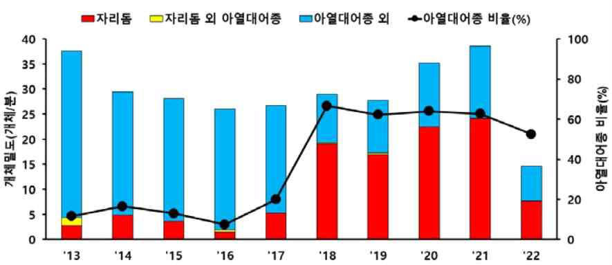
5. 해양생태계 기후변화 지표종
해양생태계 기후변화 지표종은 해수 수온 상승으로 인한 서식 및 분포범위 변화, 번식활동 시기 변화, 개체군 변화가 비교적 뚜렷하여 지속적인 조사·관찰을 통해 기후변화를 파악할 수 있는 해양생물을 지정한 것이다. 해양생태학적 가치 및 해당 해역 내 연속적인 출현 여부 등을 고려하여 선정한다.
대표적으로 해양수산부에 해양생태계 기후변화 지표종을 23종으로 지정하였다(해양수산부 보도자료, 2023.4.21.). 분류군별로는 해양어류가 연어, 파랑돔 등 5종, 무척추동물은 검은큰따개비, 빨강불가사리 등 13종, 해조류는 옥덩굴 등 5종을 지정하였다.
국가 해양생태계 종합조사 결과를 이용하여 해역별 지표종을 선정하였다. 서해는 눈콩게, 알락꼬리마도요, 검은머리물떼새, 남해는 달랑게, 부챗말, 동해는 긴꼬리도약옆새우, 큰곤쟁이, 동북곤쟁이, 대마난류 영향권은 삼각따개, 보석말미잘, 유착나무돌산호, 옥덩굴을 지표종으로 선정하였다. 또한 아열대화 모니터링 해역 집중 관찰종을 선정하였는데 국내 전해역 관찰종(11종), 지역별 관찰종(5개소, 6종), 생태계 훼손종(2종)으로 구분하였다.
국립공원관리공단이 지정한 해양기후변화 지표종은 총 20종으로 온대성 변동 생물종 12종, 한 대성 감소 생물종 2종, 단기 유입 가능 생물종 6종이며, 7종은 해양수산부에서 지정한 지표종과 동일하다.
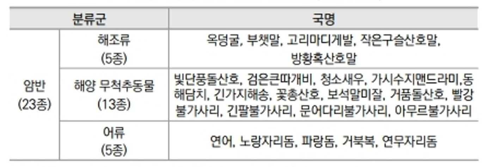
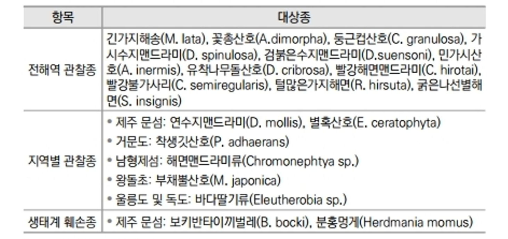
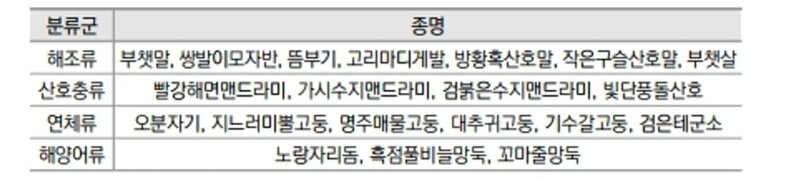
제2절 관리 정책
우리나라 외래종 관리 법제는 크게 외래종의 유입을 차단하는 검·방역 법률과 검역을 통해 들여온 외래종의 국내 야생생태계로의 방출을 방지하고 이미 정착하여 피해를 발생시키는 일부 외래종의 규제를 다루는 환경관련 법률로 나눌 수 있다. 해양수산부의 외래해양생물 관리는 「수산생물질병관리법」과 「유전자 변형 생물체의 국가간 이동등에 관한 법률」에 근거한 국경검역과 「해양생태계의 보전 및 관리에 관한 법률」(이하 해양생태계법)에 근거한 '해양생태계교란생물'과 '유해해양생물' 관리가 대표적이다.
1. 법·제도
「환경정책기본법」은 환경보전에 관한 권리·의무와 국가의 책무를 명확히 하고 환경정책의 기본 사항을 다루는 법률이다. 오염원인자 책임원칙, 환경오염 등의 사전예방, 환경과 경제의 통합적 고려, 자원 등의 절약 및 순환적 사용 촉진 등을 기본원칙으로 하며, 국가환경종합계획의 수립·시행과 사전환경환경검토 및 환경영향평가 등을 규정하고 있다.
「해양생태계 보전 및 관리에 관한 법률」은 해양생태계를 종합적이고 체계적으로 보전·관리하여 국민의 삶의 질을 높이고 해양자산을 보호하기 위해 제정하였다. 조사, 해양생물 보호, 해양보호구역 지정·관리, 해양생물다양성 보전, 해양자산 관리 등의 사항을 규정하고, 해양생물 보호·복원 등을 위한 해양생태계 보전·관리 기본계획 수립, 해양생태계교란생물 관리, 유해해양생물 관리를 다룬다.
「수산자원관리법」은 수산자원관리 계획을 수립하고, 수산자원의 보호·회복·조성 등에 필요한 사항을 규정하여 수산자원을 효율적으로 관리함으로써 어업의 지속 발전과 어업인의 소득 증대에 기여하기 위해 제정하였다.
「생물다양성 보전 및 이용에 관한 법률」은 생물다양성의 종합·체계적 보전 및 생물자원의 지속가능한 이용을 도모하고 생물다양성협약을 이행할 목적으로 제정하였다. 유입주의 생물 및 외래생물 관리 등을 위한 국가생물다양성전략의 수립, 유입주의 생물 또는 외래생물이 생태계 등에 미치는 위해성 평가, 유입주의 생물 관리, 생태계교란 생물 등의 방출 등 금지 등을 규정하고 있다. '유입주의 생물'은 국내 유입될 경우 생태계에 위해를 미칠 우려가 있는 생물, '생태계교란 생물'은 위해성평가 결과 생태계 등에 미치는 위해가 큰 것으로 판단되는 생물, '생태계위해우려 생물'은 유출될 경우 위해를 미칠 우려가 있어 관리가 필요한 생물이다.
「야생동물 보호 및 관리에 관한 법률」은 생물·서식환경을 체계적으로 보호·관리하여 야생생물 멸종을 예방하고, 생물다양성을 증진시킬 목적으로 제정한 법률이다. 생태계교란 야생생물 관리 등을 위한 야생생물 보호 기본계획, 야생동물 질병관리 기본계획 수립·이행한다.
2. 계획
『제2차 해양생태계 보전·관리 기본계획(2019-2028)』에서는 모니터링 체계 개선을 통한 외래생물 관리 강화, 유해 및 해양생태계교란 생물의 피해 최소화를 외래생물 정책 과제로 제시하였고, 『제3차 국가 기후변화 적응대책(2021-2025)』에서는 수산 외래생물의 유입 모니터링 강화를 외래생물 관리 정책 과제로 제시하였다.
『제5차 국가환경종합계획(2020-2040)』에는 외래생물 관리를 위한 생태계교란 생물침입 예방 및 통제 강화, 외래생물 정밀조사 및 정보시스템 구축, 해양유해생물 관리를 통한 건강성 증진을 정책 과제로 제시하였다. 『제4차 국가생물다양성전략(2019-2023)』에서는 외래생물 유입 차단을 위한 범부처 대응체계 강화, 외래생물 위해성 평가·관리 기술 개발 및 관리 대상종 확대, 침입 외래생물 조기 발견 및 조치, 침입 외래생물 방제·퇴치·제거를 과제로 제시하였다.
『제5차 국가생물다양성전략(수립중)』에서는 유입주의 생물 지정 확대, 침입 외래생물 유입경로 관리·통제를 통한 유입·정착 감소, 우선영향지역의 침입 외래생물 관리를 통한 영향 감소·제거, 해양 외래 생물 모니터링 체계 구축·실시를 외래생물 관리 정책 과제로 제시하였다.
『제4차 야생동물 보호 기본계획(2021-2025)』은 외래생물 관리를 위해 침입 외래생물에 의한 멸종위기 야생생물 위협 현황 파악, 유입주의 생물 지정 대폭 확대 및 유입 차단, 국내 유입된 외래생물 모니터링 체계 정비, 외래생물 관리기반 확대, 위해우려 외래생물 정보 제공을 정책 과제로 제시하였다.
외래생물 관리계획은 환경부장관이 5년마다 수립하는 계획으로 『제2차 외래생물 관리계획(2019-2023)』에서는 미유입 위해 의심종 사전관리 강화, 국내 유입 외래생물 위험 관리 강화, 외래생물 확산 방지체계 구축, 외래생물 관리기반 확충 등을 제시하였다.
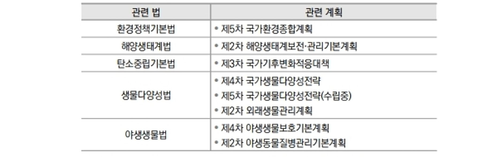
제3절 주변 해역 해수온도 변화
해면수온은 대기와 경계를 이루는 보통 수심 1m 이내의 수온을 말한다. 해양과 대기 사이의 에너지, 운동량, 수증기 및 기체 등의 교환에 중요한 역할을 하며, 해양과 대기 사이의 열과 수분 교환은 전지구적인 기상체계와 기후양상을 좌우한다. 해면 수온의 상승은 해수면 상승을 유발하고, 용존산소를 감소시키는 등 해양생물의 생존에 영향을 미친다.
동아시아 해역은 황해, 동중국해, 동해, 쿠로시오 해류역, 북서태평양의 일부를 포함하는 해역으로, 우리나라 기후변화와 영향을 주는 해양지리 구역이다. 쿠로시오 해류는 열대의 물질과 에너지를 북쪽으로 수송하며, 일부가 제주해협과 대한해협을 통해 동해로 유입되기 때문에 우리나라 해양기후 이해와 예측에 매우 중요하다.
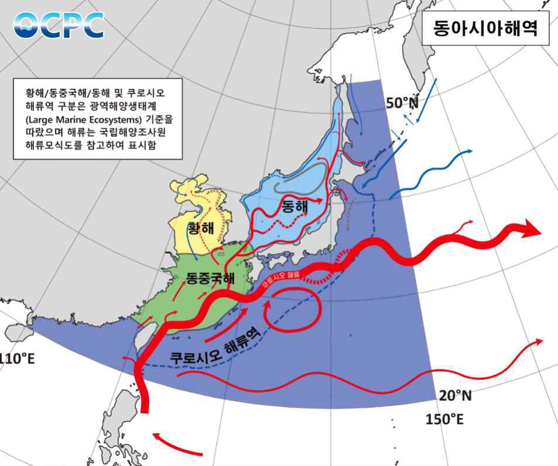
과거부터 현재까지 40년 동안 우리나라 평균 해면 수온은 전지구 수온 상승률과 동일하게 10년마다 약 0.2℃ 상승하였다. 동해와 동중국해는 10년마다 약 0.3℃ 상승한 것으로 나타나 전지구, 한반도 주변해역 평균 상승보다 높은 상승률을 보였다.
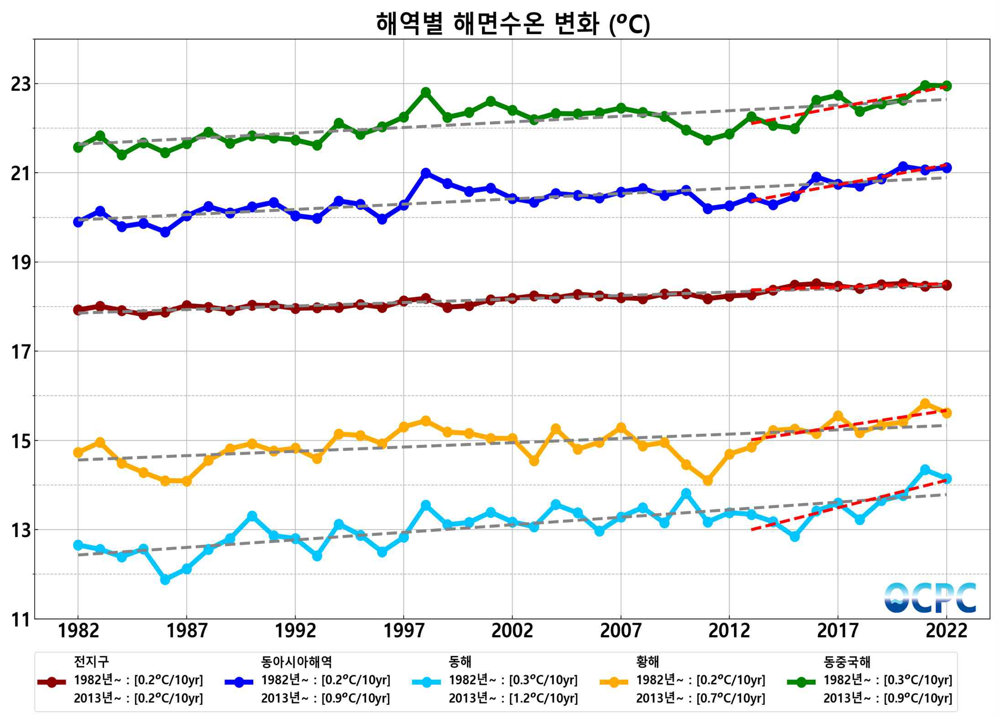
해면 수온은 계절 변화가 크기 때문에 연평균 상승률 외에 계절 변화를 살펴보는 것이 중요하다. 동아시아 해역은 겨울보다 봄, 여름, 가을에 상승률이 높았고(0.3℃/10yr), 동해는 여름과 가을에 0.4℃/10yr의 상승률을 보였다. 사계절 모두 해면 수온이 상승하고 있으며, 특히 여름철에 상승률이 높은 것으로 나타났다.
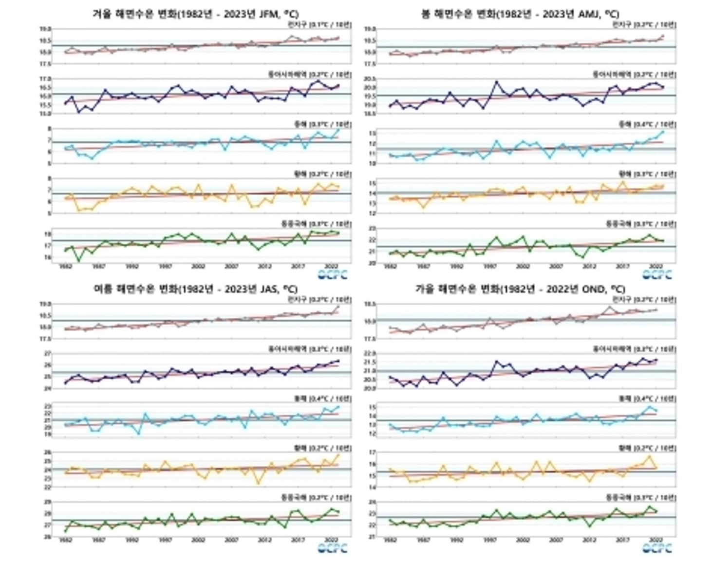
제1절 2050년·2100년 해수온도 예측 개요
해수면 온도(SST)는 중요한 해양물리적 특성으로, 바다와 대기 사이 열의 흐름을 보여주기 때문에 지구 기후변화 예측에 활용된다. 해수면 온도가 상승하면 해양 위 대기 중 수증기 양이 증가하여 폭우와 폭설이 빈번해지거나, 폭풍의 경로를 이동시켜 일부 지역에서는 가뭄을 발생시키기도 한다. 또한 해수면 온도 상승은 다양한 해양 동·식물의 이동 및 번식뿐만 아니라 우리 인간의 보건에도 영향을 미친다. 식중독을 일으킬 수 있는 특정 박테리아의 성장 기간이 늘어나 인간의 건강을 위협하기도 한다.
해수온도 변화를 예측하는 것은 해양 생태계 보전과 관리, 해양수산자원의 이용, 공중 보건의 대응방안을 마련하는 측면에서 그 중요성이 점차 증가하고 있다. 부경대 김영호 외 연구진은 CMIP6를 기반으로 SSP5-8.5 시나리오로 해수온의 미래 추이를 분석하였다. 11개 모델에서 생산한 예측값의 평균값(앙상블)으로, 주변 해역 해수온도는 꾸준히 상승하여 2050년에는 약 20℃, 2100년에는 약 24℃까지 이를 것으로 전망하였다. 해수온도 상승 경향이 지속될 경우, 우리나라 연안해역으로 아열대 종의 유입이 증가할 것으로 예상된다.
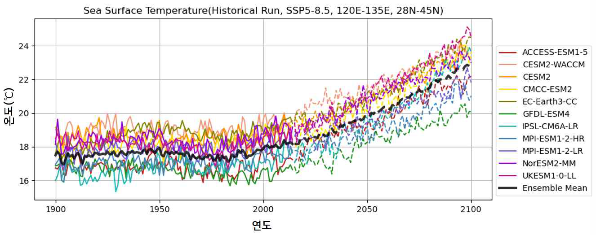
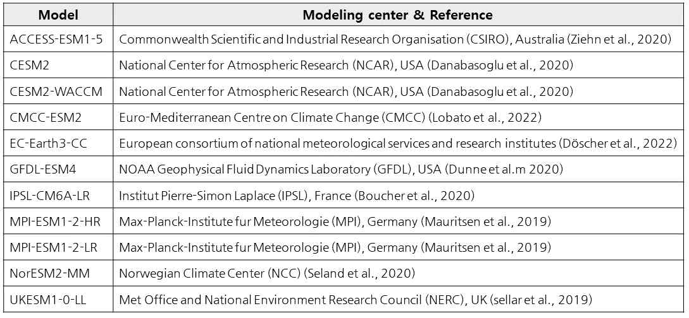
제2절 아열대 종 현황 및 영향
1. 큰갈파래
1) 현황
큰갈파래(Ulva ohnoi)는 우리나라 남해안과 제주도 조간대에 주로 분포하였으나 분포 지역이 북상하여 인천 옹진군과 울릉도에서도 발견되고 있다. 큰갈파래의 엽체는 연녹색으로 길이 5~10cm, 폭 3~7cm에 이르며 광택이 있고 질감이 부드러운 것이 특징이다. 적정 서식 수온은 20~25℃이며 서식 하한 온도는 13℃로(Nakamura et al., 2022) 조간대 암반에 부착하여 자란다.
큰갈파래 분포지역이 넓어진 것은 수온 상승과 밀접한 관련이 있는 것으로 보인다. 지난 36년 동안 제주도 겨울철 수온이 3.6℃ 증가했고, 아열대종인 큰갈파래가 제주도 해역을 뒤덮었다. 최근 3~4년 만에 미역과 감태 등의 해조류가 절멸하였으며 마라도에서는 톳의 개체수가 크게 줄어들었다. 토종 해조류의 감소로 해조류를 주식으로 하는 소라, 성게, 및 제주 지역의 대표 어종인 자리돔의 수확량이 줄어들고 있어, 기후변화에 따른 큰갈파래 개체 수 증가는 해양생태계 보전과 관리 이슈가 되었다.
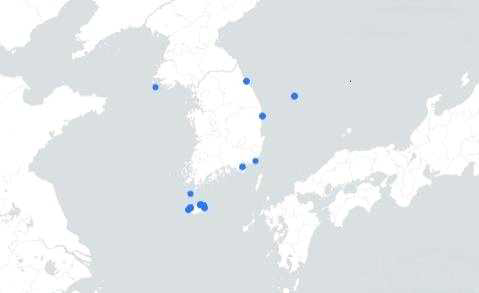
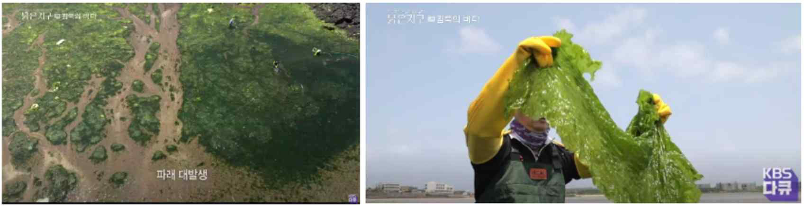
2) 영향 및 관리방안
현재 큰갈파래는 제주도 연안과 남해안에서 주로 발견되고 있지만 연구팀의 예측 결과에 따르면 큰갈파래의 서식 상한선은 2050년 울릉도 북측에서 2100년 북한 원산시 앞바다까지 북상할 것으로 예상된다. 이는 큰갈파래가 2050년에는 울릉도 하단까지 빈번히 관찰될 수 있으며 2100년에는 그 서식 범위가 동해 북측까지 확장될 수 있음을 의미한다. 큰갈파래의 개체수 조절을 위해서는 먼저 연안 육역에 소재한 양식장, 축산 등에서 기인한 배출수를 철저히 관리하여 영양염 유입을 최소화하는 것이 필요하다. 육상기인 배출원을 관리했음에도 수온상승으로 인한 개체수 증가가 불가피하다면 큰갈파래를 다른 산업의 원재료로 이용하는 방안을 모색할 수 있다.
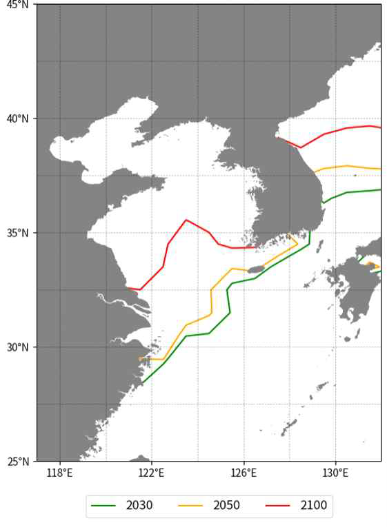
큰갈파래의 분해물이 항노화 기능성 화장품의 재료로 이용될 수도 있다. 한불화장품은 2014년 갈파래에서 항노화 성분을 추출하는 방법에 대해 특허를 등록하였으며, 앞으로 생명공학연구를 통해 큰갈파래를 식용 및 산업 소재로 개발 가능성이 커질 것이다.
Revilla-Lovano 외 연구진에 따르면 큰갈파래는 바이오 연료 또는 바이오 필터로 활용 가치가 뛰어난 것으로 나타났다(Revilla-Lovano et al., 2021). 현재 바이오 연료로 가장 활발히 연구되고 있는 것은 바이오 디젤과 바이오 에탄올이다. 바이오 디젤은 일반 경유에 비해 탄화수소 배출량이 61%, 미세먼지는 49% 수준이고, 황산화물이나 벤젠은 전혀 배출되지 않아 친환경 연료로 분류되고 있다.
2. 해호말
1) 현황
해호말(Halophila nipponica)은 평균 수심 5미터 연안에 조류에 의한 해수 유동이 원활한 지역에 주로 서식한다. 적정 서식 수온은 15℃~25℃이며 10℃ 이하에서는 성장을 멈추기 때문에 최근까지 아시아에서는 홋카이도를 제외한 일본 동해 연안이 분포 최상한선인 것으로 학계에 보고되었다. 하지만 2007년 여수에서 처음 발견되어 바다를 사랑하는 해초라는 뜻의 '해호말'이라는 우리말 이름이 붙여졌으며 지금은 남해 연안 곳곳에서 관찰되고 있다. 해호말은 온대성 잘피와 달리 여름철 최고 수온에서 생산성이 가장 높은 반면, 겨울철에는 생체량과 생육밀도가 급격히 감소하는 특징이 있다. 또한 연안 퇴적층에 뿌리를 내리고 자라는 해초류로서 수질 정화력이 우수한 여러해살이풀로 잠재적인 블루카본 생물종이다.
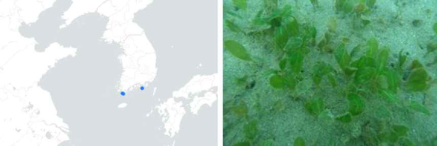
2) 영향 및 관리방안
현재 해호말은 제주도 연안과 남해안에서 주로 발견되고 있지만 예측값에 따르면 서식 상한선은 2100년 동해 강릉 연안까지 북상할 것으로 예상된다. 해호말이 2100년에는 우리나라 동해안 전역에서 관찰될 수 있음을 의미한다.
아열대 해초류인 해호말 유입으로 피해가 발생했다는 보고는 없어, 잘피를 대신할 블루카본 해초류로서 관리 필요성이 증가할 것으로 예상된다.
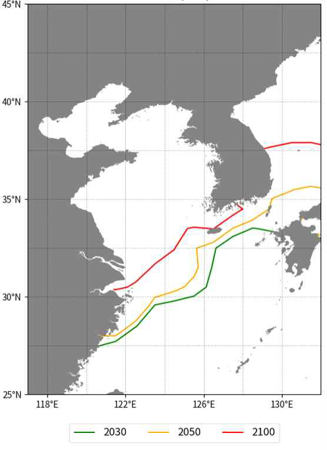
해호말은 원활한 해수 유동을 필요로 하는 수심 5m 이내의 연안에서 서식하므로, 서식지 보전을 위해서는 육상에서 발생하는 오염물질을 통제하고 연안의 인공 구조물에 의해 방해받는 해수 흐름을 개선하는 것이 중요하다. 또한 우리나라 블루카본 확대를 위한 해초류 복원 사업에서 잘피를 주로 이식하고 있으나, 향후 해호말 종자의 확보 및 이식 기술 개발이 해양 탄소 흡수에서 역할을 할 가능성도 있다. 해호말의 탄소 흡수 계수를 산정하고 먹이사슬에서 역할이나 해양 생물 서식 환경 제공과 같은 생태계 서비스의 가치를 평가하는 것이 필요하다.
3. 맹그로브
1) 현황
동아시아 서식 맹그로브 중 내한성이 높은 맹그로브인 Kandelia obovata는 베트남, 인도네시아, 중국 남부 및 일본 등에 서식하고 있다. 아직까지 한국 연안에 맹그로브가 발견된 적은 없으나 남정호 외 연구진은 기후변화에 따라 2040년에 우리나라 연안에 서식할 가능성이 크다고 예상하였다(Nam et al., in press). Kandelia obovata의 경우 내한성이 높아 겨울 평균 기온 약 10℃ 지역까지 서식하며 최저 –5℃에서 낙화현상이 발생하는 것으로 드러났다(Lu et al., 2022). 이 종의 개화기는 5월에서 7월 사이로 씨앗이 한번 발아하면 광합성을 통해 스스로 양분을 생산할 수 있는 번식체가 되며 3~6개월 후 성숙한 번식체는 물에 떨어져 먼 거리까지 이동할 수 있다. 또한 건조 상태에서도 생존하며 서식하기 적정한 환경에 도착할 때까지 1년 이상의 휴면 상태를 유지하는 것으로 알려져있다.
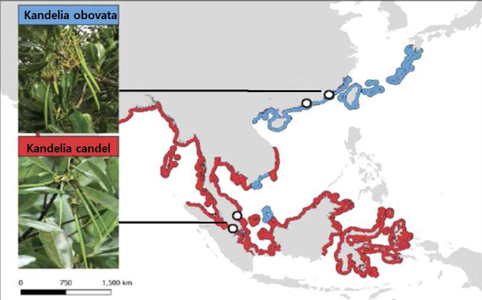
2) 영향 및 관리방안
우리나라 연안에 맹그로브가 서식하지 않지만, 예측 결과에 따르면 2030년에는 남해 연안까지, 2050년에는 강원도 속초 연안까지 맹그로브의 분포 지역이 확장될 것으로 보인다. 2100년 서식 하한선은 북한 끝단까지 이를 것이고, 이는 맹그로브가 2100년에는 우리나라 연안 전역에서 쉽게 관찰되는 수종이 될 수 있음을 의미한다.
해외에서 맹그로브 유입으로 피해를 보고한 사례는 없으며 오히려 높은 탄소 흡수력과 뛰어난 연안 재해 저감 능력때문에 복원 대상으로 분류하고 있다. 맹그로브의 탄소흡수력은 열대우림의 30~40배 이상으로 보고되고 있다(Mcleod et al., 2011). 맹그로브가 탄소를 흡수하여 서식 퇴적층에 장기간 격리하는 기능이 있어 대표적인 블루카본 생물종으로 인정받고 있다.
맹그로브는 해양의 파도를 줄여 연안 침식과 침수를 방지하는 자연완충지대로 연안그린인프라로 인정받고 있다. Zhou 외 연구진에 따르면 맹그로브 서식지 폭이 275m 이상이면 파도 영향의 약 58%가 감소한다고 한다(Zhou et al., 2022). 또한 맹그로브 숲은 다양한 어류의 부화와 생육장의 공간을 제공하고 물 정화 능력도 뛰어나 맹그로브가 유입하면 얻을 수 있는 혜택은 다양할 것으로 예상된다.
따라서 기후변화에 따른 맹그로브 유입을 예측하여 선제적으로 관리방안을 마련하여 맹그로브가 제공하는 생태계 서비스를 극대화하는 것이 필요하다. 먼저 맹그로브가 서식가능하도록 담수와 해수 소통이 쉬운 열린 하구를 많이 확보하는 것이 필요하다. 연안 이용과 개발이 높은 우리나라의 특성을 고려할 때, 연안 토지를 매수하여 거주지를 후퇴시키고 자연해안선을 확대하는 것도 고려할 수 있다. 우리나라에 서식하기 유리한 맹그로브 품종을 개발하고 종아 발아와 식재 기술을 고도화하는 기초 연구를 지원하는 것도 장래 얻을 수 있는 혜택을 늘리는 방법이다.
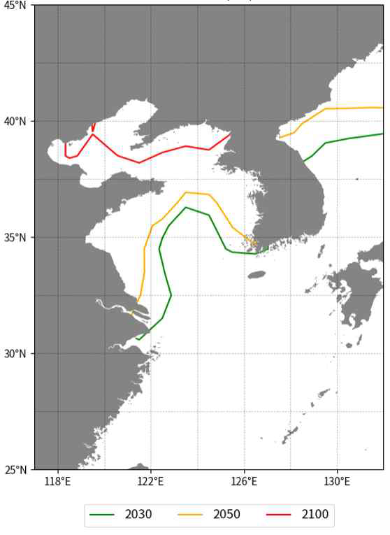
4. 거품돌산호
1) 현황
거품돌산호(Alveopora japonica Eguchi)는 석회질 몸통을 가진 군체형 종으로 군체가 함께 사용하는 하나의 큰 석회질 덩어리에 각각의 개체들이 자신의 몸통을 박아 놓은 형태로 존재한다. 석회질 몸통은 연회색 또는 흰색이지만 각 개체의 촉수는 약간 형광빛을 띠면서 짙거나 옅은 화려한 녹색 계열의 색상을 띤다. 서식 온도는 10℃~32℃로 수심 5~20m에 분포하며, 조하대 암반이나 큰 바위 표면에서 비교적 흔하게 발견되는 산호류이다. 국내에서는 제주, 남해 연안(난류 영향 해역), 해외에서는 일본과 대만에 분포한다.
최근 10~20년 전부터 평균 해면 수온이 상승하면서 제주 해역에서 개체군 규모가 점차 확대되어 다른 부착생물들과 부착 기질 경쟁에서 절대 우위를 보이고 있다. 거품돌산호가 확산한 해역에서 대형 또는 초대형 저서생물 다양성은 줄어들었다. 그러나 개체 사멸 후 남겨진 군체의 중소형 구멍을 서식처로 이용하는 중소형 저서동물의 개체군 규모와 다양성이 높아지는 경우도 있다. 과거에는 제주 해역에 주로 분포하였으나, 최근 남해 외곽 도서 및 연안까지 확산되고 있다.
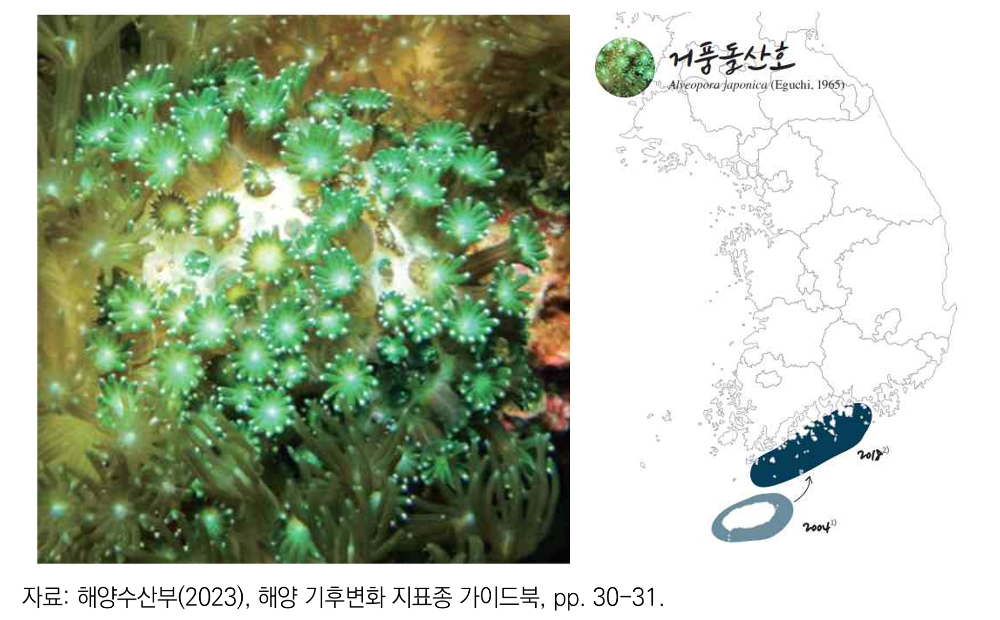
2) 영향 및 관리방안
거품돌산호는 현재 제주 해역과 남해 연안에 분포하고 있으나, 해수온도 예측 결과에 따르면 2050년에는 동해 전역, 2100년에는 우리나라 전 해역으로 서식 범위가 확산되는 것으로 예상된다.
제주 연안생태계는 감태와 같은 대형 갈조류 중심의 해조 기반 생태계에서 아열대성 산호류가 중심이 되는 산호 기반 생태계로 변화하고 있다. 종다양성이 감소하고, 생산성이 낮아지는 등 영향이 있으나, 온도 상승으로 국내 연안에 산호초 군락지가 늘고 있어 생태계서비스 측면에서 산호초 관광산업에 도움을 줄 수 있다. 또한 산호의 가치는 의약 신소재나 신물질 추출 등 해양생명 자원으로 활용되는 것은 물론이고, 산호 생태계를 구성하는 열대어, 갑각류 등을 활용하여 생태관광에 기여할 수 있다.
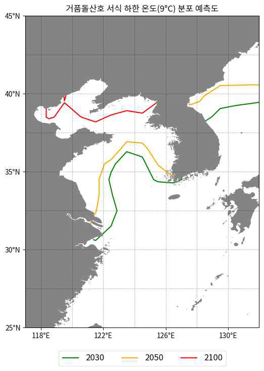
5. 유령멍게
1) 현황
유령멍게(Ciona robusta)는 척삭동물로, 대서양에서 유입하여 동해, 서해, 제주도 등 우리나라 전 해역에 분포한다. 서식 온도가 –1℃~30℃로 범위가 넓으며, 연안에서 수심 500m까지 서식한다. 파도가 없이 잔잔한 양식장 시설이나 선박, 다리 밑에 붙어서 서식한다. 몸은 기다랗고 앞쪽 끝이 약간 좁은 형태로, 등 쪽에 입수공이 있고, 약간 뒤쪽에 출수공이 있다. 유생 시 부유 생활을 하다가 성체가 되면 일정한 지점에 착상하여 고착 생활을 한다. 양식장 시설물이나 선박 밑에 대량 번식하여 양식업과 선박운항 등에 피해를 준다(한국동식물도감, 1997).
유령멍게는 「해양생태계의 보전 및 관리에 관한 법률」 제5조 제12호에 따라 우리나라에서 유일하게 해양생태계교란생물로 지정되었다. 해양생태계교란생물은 '외국으로부터 인위적 또는 자연적으로 유입되어 해양생태계의 균형에 교란을 가져오거나 가져올 우려가 있는 해양생물과 유전자의 변형을 통하여 생산된 유전자 변형생물체 중 해양생태계의 균형에 교란을 가져오거나 가져올 우려가 있는 해양생물'을 말한다.
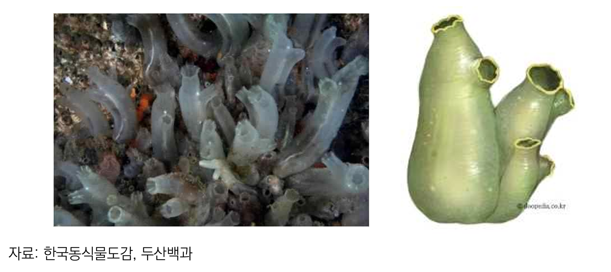
2) 영향
유령멍게는 우리나라 전 해역에 분포하고 있으며, 예측모델을 이용한 서식 분포를 예측한 결과, 앞으로도 우리나라 전 해역에 분포할 것이다. 유령멍게는 외래 유입 해양생물로 1990년대부터 우리나라 연안 해역에 서식하면서 양식굴의 성장을 방해하고, 죽으면 바다 밑바닥에 쌓여 수질을 악화시키는 등 해양생태계에 피해를 주지만, 바이오매스 원료로 이용할 수 있는 잠재력이 있다. 유령멍게를 비롯한 피낭동물은 기본적으로 여과 튜브를 통해 박테리아와 미생물을 흡입한 뒤 반대편 출구로 정제된 물을 배출하므로 해안가 정화 효과도 기대할 수 있다. 피낭동물은 셀룰로오스를 생성할 수 있는 유일한 동물이자 오메가-3 지방산이 풍부하여, 바이오에탄올 생산 및 양식 어류의 먹이로서 잠재적 활용 가능성이 매우 높다.
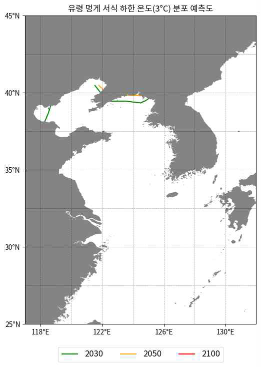
참고: 유령멍게의 서식하한온도가 –1℃이나 예측도에 나타나지 않아, 3℃로 그래프 작성
온실가스를 배출하는 과정은 인간의 통제하에 있지만, 해양기후변화에 따른 환경과 생태계 변화 과정, 변화가 인간에게 영향을 미치는 경로는 통제 밖에 있다. 현재 경제활동 구조를 그대로 유지할 경우 문제의 근원에 접근하여 변화를 막을 수 있는 해결책은 없다. 변화는 관성, 경로의존성이 있기때문에 변화의 원인을 없애지 않는 한, 아열대화는 회피할 수 없는 현실이 될 것이다. 아열대화는 단기적으로 아열대성 기후대에 가까워지는 현상이지만, 기후변화가 임계점(tipping point)을 넘으면 아열대 환경으로 바뀐다. 수용해야 하고, 적응하며 살아가야 할 환경이다.
1. 외래해양생물 유입 적응 여건
적응 대책이 해양 기후변화에 대응할 수 있는 가능한 수단이다. 적응 대책을 마련하고 시행할 때 고려해야 할 여건은 아래와 같이 정리할 수 있다.
첫째, 바다는 물리적으로 접근이 어려워 바다를 대상으로 적응 대책을 마련하는 것은 어렵다. 연안지역, 해안가는 기후변화에 따른 위험도(리스크), 취약성을 평가하고, 해안지역 보호를 위한 사업을 설계하고 시행하는 것이 가능하다. 반면, 해양환경의 화학적, 물리적 특성을 인위적으로 변화시키거나 피해를 줄일 수 있는 물리적 수단은 거의 없다.
둘째, 육상에 비해 정책적 관심이 상대적으로 낮아 투자 우선순위가 낮다. 주거 안정성과 식량안보 이슈는 일상과 관련성이 높다. 재원과 이용할 수 있는 자원이 한정적일 때, 투자 효과와 혜택을 쉽게 확인할 수 있는 육상에 우선 투자한다. 이용할 수 있는 자원이 부족하여 혁신적인 아이디어가 있더라도 선택받기 어려울 수 있다.
셋째, 해양기후예측, 해양생물종 서식환경 연구가 부족하다. 해양기후변화에 대한 연구가 있었다 하더라도, 정교한 예측모델을 개발하고, 이 예측모델로 미래 서식환경 변화를 연구하는 것은 시작 단계이다. 유입 가능성이 높은 아열대 종의 서식 환경, 생리적 특성 연구는 많지 않다. 부족하지만 공공기관을 중심으로 아열대성 해양생물종의 유입 여부와 서식지 이동을 조사하고 있다.
2. 외래해양생물 유입 적응 가이드라인(안)
외래생물종의 유입과 확산을 억제하는 뾰족한 대책이 있는 것은 아니다. IPBES가 2023년 발간한 외래생물종 보고서를 봐도 인위적인 유입 외에 뚜렷한 대책을 제시하고 있지 않다. 밸러스트 수를 통해 들어오는 인위적 유입은 국제협약, 국내 법률로 행위를 규제하거나, 기술을 이용하면 어느 정도 통제할 수 있다. 적합한 서식처를 찾아 이동하거나 해류를 따라 흘러 들어오는 유입 과정을 차단하는 것은 불가능하다. 기후변화에 따른 해류의 변화, 서식환경의 변화로 유입하는 생물을 통제할 수 없다. 유입 생물이 변화된 해양환경에 잘 적응하여 정착하고, 서식 범위를 넓히면 상황은 더 악화된다. 뾰족한 대책은 없지만, 가능한 범위에서 적응체계를 잘 구축하고, 효과적인 대책을 시행하면 적어도 피해가 커지는 것을 막을 수 있다.
1) 통합 적응 거버넌스 구축 – 해양수산부, 환경부, 지자체
외래해양생물을 다루는 부처는 해양수산부, 환경부가 있다. 두 부처는 관할하는 법률에 따라 역할이 다른데, 해양수산부는 선박 등 인위적 유입관리와 외래해양생물 조사를, 환경부는 국립공원과 특정도서 주변해역의 외래생물 조사를 담당한다. 기후변화에 따른 외래생물종 유입에 효과적으로 대응하기 위해 부처간 협력관계 구축에 대한 관심은 높지 않다. 해양생물은 행정적 목적이나 법률로 정한 인위적 경계에 서식지를 제한받지 않는다.
모든 생물종에 대해서 통합 적응 거버넌스, 대책을 시행하는 것은 어렵지만, 적어도 사회경제, 건강에 위협이 되는 생물종을 중심으로 협업 거버넌스를 구축하는 것은 가능할 것이다. 시화호 등 이미 일부 해역에서 생태계교란생물 퇴치 협업 경험이 있는 것도 협업거버넌스 구축의 자산이다. 두 부처가 중심이 되고, 서식이 확인된 지방자치단체가 참여하는 가칭 '해양기후변화 유해외래생물종 관리 거버넌스'를 구축하는 것이 필요하다. 관리거버넌스 인프라 사업으로 해양기후변화 외래생물 DB를 공동 운영하는 것을 우선 검토할 수 있다.
2) 전문가 과학과 시민과학 연계 – 시민과학 플랫폼 구축, 사업개발 지원
정부는 법률에 따라 국가의 책임의 하나로 정기적으로 해양생태계를 조사한다. 문제가 심각한 해역이나 사회적 관심이 높은 이슈를 해결하기 위해 대학, 연구소에 연구사업을 의뢰하기도 한다. 정부 또는 공공기관 전문가가 수행하는 전문가 과학이 모든 시간, 모든 공간을 다룰 수 없다. 자발적 관찰, 간헐적 모니터링을 넘어 아마츄어 과학자 수준의 조사연구로 발전한 시민과학이 공공조사의 공백을 메울 수 있다. 기후변화와 외래생물종에 대한 자료와 정보 부족, 지식 격차를 해소하는 것이 도전적 이슈라고 한다(Gian-Reto Walther et al., 2009). EU와 미국 등 선진국은 시민과학 플랫폼을 운영하고, 시민과학 프로젝트를 적극 지원한다.
장소에 대한 접근이 어렵고, 공간범위가 넓은 해양의 특성 때문에 시민과학은 전문가과학의 공백을 메우는 것을 넘어, 외래생물종의 발견과 서식범위를 파악하는데 기여할 수 있다. 전문가과학과 시민과학을 연계하는 가칭 '해양기후변화 시민과학 플랫폼'을 구축하고, 시민과학 사업 개발·지원 정책을 시행하면 가능하다.
3) '기후변화 영향 감시종'(가칭) 지정·관리 – 유입·확산 가능성, 피해 잠재력이 큰 종 대상
아열대화가 진행되면 아열대 생물이 정착하고 서식지를 확대하는 것은 자연스런 과정이 될 것이다. 이용할 수 있는 재정, 인적 자원, 장비를 무한정 늘릴 수 없어, 모든 아열대생물종을 유입종으로 설정하여 관리하는 것은 어렵다.
우리나라 주변 해역과 물리(해류)적으로 연결된 아열대 해역에 서식하는 생물이 유입가능성이 높다. 이미 유입되었거나 유입할 가능성이 높은 모든 생물이 연안 경제와 해양생태계에 피해를 주는 것은 아니다. 따라서 관리자원을 효과적으로 활용하려면 유입과 확산 가능성이 높고, 유입·확산으로 경제적, 생태적 피해가 크게 나타날 종을 선별하는 것이 필요하다. 해양수산부가 해양생태계교란생물과 유해해양생물을 조사하여 법정 관리종으로 분류하여 관리하고 있지만, 기후변화의 영향을 온전하게 반영한 것은 아니다. 따라서 기후변화 관련 생물과 우리나라 해역으로 유입가능성이 높고 피해잠재력이 큰 생물을 '해양기후변화 지표종' 또는 '해양기후변화 감시종'(가칭)으로 별도 지정하여 사전예방적 관리가 가능하도록 한다.
4) 인위적 유입 방지 노력과 연계
생물종의 자연유입뿐만 아니라 인위적으로 해양생물이 우리나라 해역으로 유입하는 경우와 아열대화를 연계하여 관심을 가져야 한다. 물건이 없는 상태에서 항해할 때 선체를 안정시키기 위해 선박 밑바닥에 해수(밸러스트 수)를 넣는데, 이 밸러스트 수를 통해 외래생물종이 유입한다. 서식환경이 외래생물종에 적합하지 않을 경우 생존이나 확산이 이루어지지 않을 수 있다. 만약 아열대성 외래생물종이 유입하고, 해양환경이 아열대성 생물의 서식에 적합할 경우 우리나라 해양생태계도 아열대성 생태계로 바뀐다. 아열대화는 외래생물종의 생존과 확산에 유리한 환경조건을 만드는 데 가장 큰 영향을 주는 요소라고 할 수 있다.
5) 외래종 유입에 따른 이익-피해 분포 지도 제작
외래생물종의 유입은 해양생태계가 인간에게 제공하는 혜택, 인간에 대한 자연의 기여인 생태계서비스에 가장 큰 위협이 된다고 한다(IPBES, 2023). IPBES는 외래생물종의 16%가 생태계 혜택에 부정적 영향을 미치고 있다고 했다. 2019년 기준으로 외래생물종 유입으로 인류가 부담하는 사회적 비용은 4,230억 달러를 넘어섰다고 한다.
전지구적으로 외래생물종의 유입은 사회적으로 비용을 증가시키지만, 지역별로는 경제적으로 이익을 증가시키기도 한다. 따라서 외래생물종 유입이 부정적 영향과 피해를 유발한다고 가정하고 대책을 세운다면, 유입으로 얻을 성장과 발전 기회를 막을 수 있다.
유입에 따른 사회적 이익과 피해규모를 산정할 수 있는 정교한 방법을 개발하는 것이 필요하다. 이익-피해 산정 방법을 공간적으로 적용하여 SSP 시나리오에 따라 시간·공간 이익-피해 분포지도를 만들면 관리자원을 효율적으로 활용할 수 있다. 이익-피해 분포지도는 지역 이해관계자가 경제활동(예, 양식, 관광)을 미리 조정하여 피해를 피하거나 줄이는 데 도움을 줄 수 있다.
6) 관련 국가, 국제기구와 협력 – 지표종(감시종) 생리·생태 국제연구
가칭 '해양기후변화 지표종(영향감시종)' 중, 우리나라 일부 해역에 제한적으로 서식하거나, 유입하지 않은 잠재종에 대한 생리학, 생태학적 특성은 토착종 대체 정도, 생태계 교란 정도, 경제적 이익과 피해 여부를 파악하는 데 필요한 자료이다. 현재는 해양생태계 조사를 거쳐 서식 여부를 확인하거나, 문헌 또는 현장 조사를 통해 경제적·생태적 피해 여부를 파악하고 있다. 즉, 기초조사에 머물러 있어, 해양생태계를 교란할 수 있는지, 교란종이더라도 유익종인지, 유해종인지, 이익과 피해 규모가 어느 정도인지에 대한 연구는 부족하다.
특히 잠재적 유입종은 우리나라 해역에 유입하지 않아, 생리학적, 생태학적 특성을 체계적으로 연구하는 것은 불가능하다. 잠재 유입종이 서식하는 국가와 국제협력 연구를 장기간 수행해야 생리, 생태 특성을 온전히 파악할 수 있다.
참고문헌
국립수산과학원, 2022, 『2022 수산분야 기후변화 영향 및 연구 보고서』. 88 pp.
부경대 해양역학예측실험실, 2023, 'CMIP 6 기반 아열대종 서식 하한선 예측'
Dijkstra, J. A., Westerman, E. L., & Harris, L. G. (2011). The effects of climate change on species composition, succession and phenology: a case study. Global Change Biology, 17(7), pp.2360-2369.
EC, 2008, A Perspective on Climate Change and Invasive Alien Species, 2nd Meeting of the Group of Experts on Biodiversity and Climate Change.
Golani, D., Ben Tuvia, A., 1995. Lessepsian migration and the Mediterranean fisheries of Israel. Science Publishers, Lebanon, New Hampshire, pp. 279-289.
Gallardo, B., et al. (2017). Protected areas offer refuge from invasive species spreading under climate change. Global Change Biology, 23(12), pp.5331-5343.
Giménez, L., et al. (2020). Exploring larval phenology as predictor for range expansion in an invasive species. Ecography, 43(10), pp.1423-1434.
Halim, Y. and S. Rizkalla, 2011, Aliens in Egyptian Mediterranean waters. Mediterranean Marine Science, 12(2): 479-490.
Harley, C. D. G., et al., 2006, The impacts of climate change in coastal marine systems. Ecology Letters, 9: 228-241.
Harris, L.G., and M. C. Tyrrell, 2001, Changing community states in the Gulf of Maine. Biological Invasions, 3:9-21.
IPBES, 2023, Summary for Policymakers of the Thematic Assessment Report on Invasive Alien Species and their Control. IPBES secretariat, Bonn, Germany.
IPCC, 2018: Global Warming of 1.5°C. Special Report. Cambridge University Press.
IPCC, 2021: Climate Change 2021: The Physical Science Basis. Sixth Assessment Report, Working Group I.
IPCC, 2022: Climate Change 2022: Impacts, Adaptation and Vulnerability. Sixth Assessment Report, Working Group II.
Lu, W. X., et al. (2022). Differentiation of cold tolerance in an artificial population of Kandelia obovata. Frontiers in Plant Science, 12, 695746.
Mcleod, E., et al. (2011). A blueprint for blue carbon. Frontiers in Ecology and the Environment, 9(10), pp.552-560.
Occhipinti-Ambrogi A., 2007, Global change and marine communities: Alien species and climate change. Marine Pollution Bulletin, 55: 342-352.
Pecl, G. T. et al., 2017, Biodiversity redistribution under climate change. Science 355, 1389.
Revilla-Lovano, S., et al. (2021). Physiological responses and productivity of the seaweed Ulva ohnoi. Algal Research, 56, 102316.
Sheue, C. R., et al. (2003). Kandelia obovata (Rhizophoraceae), a new mangrove species from Eastern Asia. Taxon, 52(2), pp.287-294.
Short, A. W., et al. (2021). Comparison between parapatric mangrove sister species. Aquatic Botany, 168, 103323.
Walther, G.R. et al., 2009, Alien species in a warmer world: risks and opportunities. Trends in Ecology & Evolution 24(12): 686-693.
WEF(World Economic Forum), 2023, The Global Risks Report 2023.
Zhou, X., et al. (2022). Wave Attenuation Over Mangroves in the Nanliu Delta, China. Frontiers in Marine Science, 9, 874818.